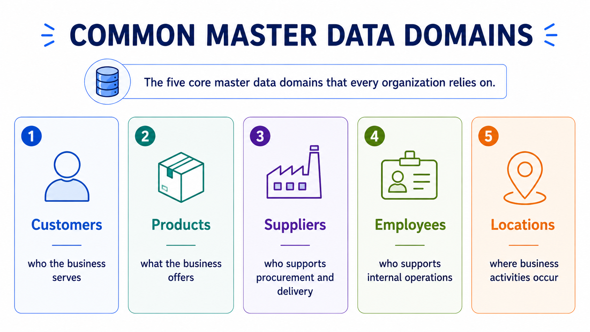

Common Master Data Domains
Module support notes
Organizations manage thousands — sometimes millions — of business records. Without structure, that information quickly becomes difficult to maintain, govern, and reuse. To manage complexity, organizations group business information into categories called master data domains. Domains create clear boundaries for ownership, governance, and business processes — and they become the foundation of trusted business information.
Definition
A master data domain is a category of core business information that shares a common purpose, ownership model, and governance approach. Most organizations manage five common domains: customers, products, suppliers, employees, and locations.
Why domains matter
Not all business information behaves the same way. Customer information follows different processes than employee or product information. By separating information into domains, organizations create manageable areas of responsibility — making data easier to maintain, easier to govern, and easier to scale across the enterprise.

Domains cross departmental boundaries
Master data domains are rarely owned by only one team. Customer information may be used by sales, operations, finance, customer support, and analytics — each department depending on the same underlying business entity. Domains create alignment across all of those activities by establishing one shared, governed version of the information everyone needs.
Domains and AI
AI systems rely on business context to produce reliable outputs. When organizations define domains clearly and manage them consistently, AI receives structured and reliable inputs — improving reporting, strengthening automation, and increasing confidence in AI-generated outcomes.